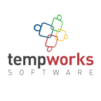

Amazon Bellevue, WA Applied Scientist II 06/2022-Present
Research and development on SLAM, NeRF, and generative AI for 3D and videos
Waymo Mountain View, CA Perception Research and Development Intern 05/2020-09/2020
Developed a sensor fusion algorithm to calibrate various sensors on the fly
Facebook Reality Labs Redmond, WA Research Intern 06/2019-08/2019
Developed a simulation system for testing visual-inertial SLAM systems
University of Minnesota Minneapolis, MN Graduate Teaching/Research Assistant 09/2017-05/2022
RA in SLAM; TA of C++, linear algebra, data structures and algorithms, and robotics

TempWorks Software Eagan, MN Software Management Trainee 12/2014-05/2015
Developed a CRM software for staffing management using Meteor and MongoDB